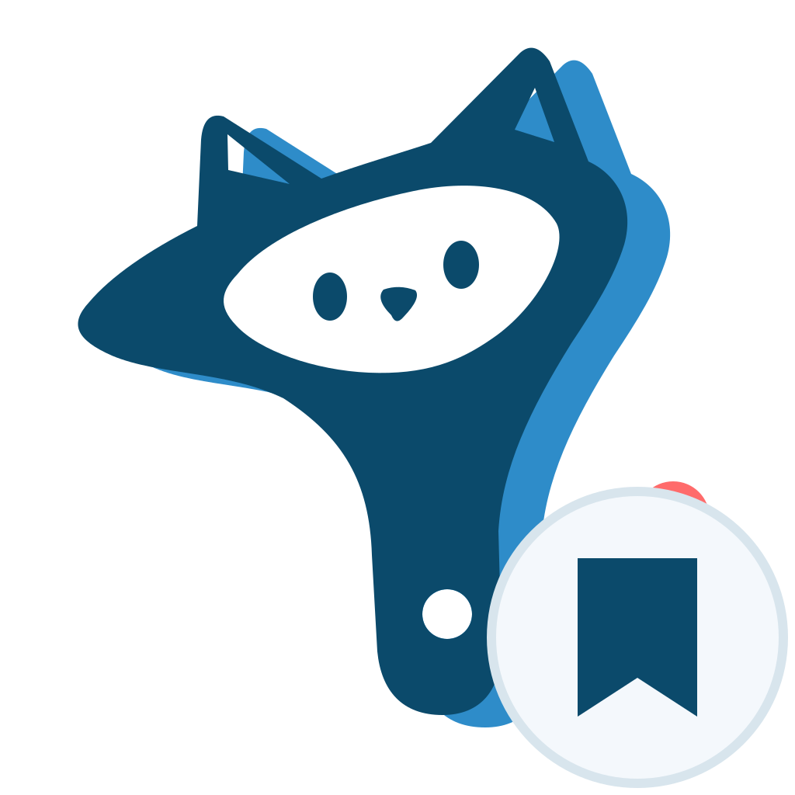
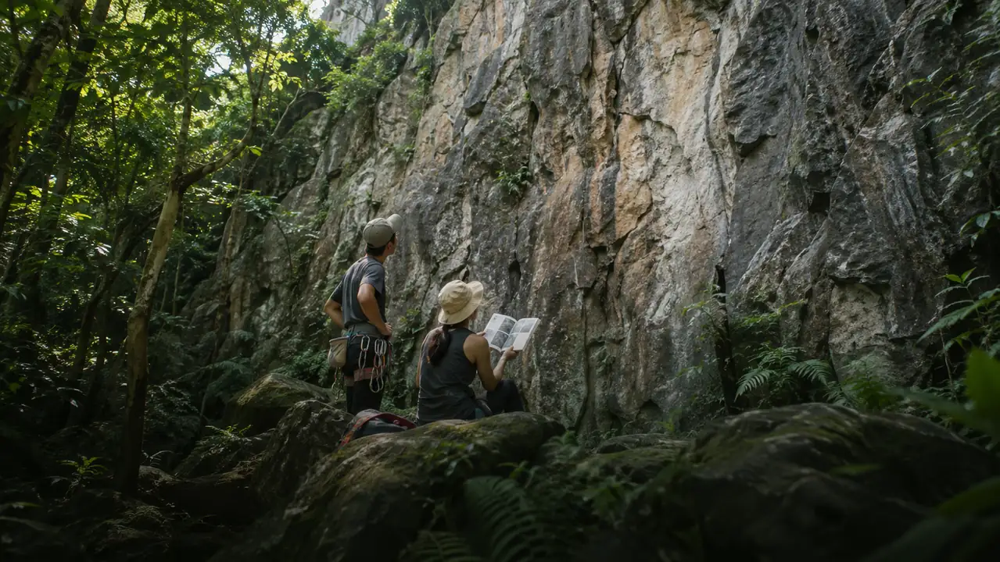

今日作った課題を残しておきたい。壁を撮影してホールドとルートを記録。次に来た時もすぐ見つかる。
作った課題を友達にも試してほしい。写真とルートを直接送信。相手の端末に保存していつでも見られる。
クライミング旅行の前に情報を集める。行きたい岩場とルートを探す。壁の写真とトポを保存しておく。

出発前に保存したトポを開く。仲間と目の前の岩壁を見比べる。スタート位置を一緒に探せる。
欲しいクライミングツールは AI で作る。登る時間をもっと楽しもう。
 仲間と共有
仲間と共有